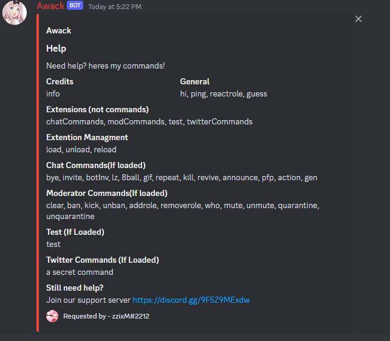
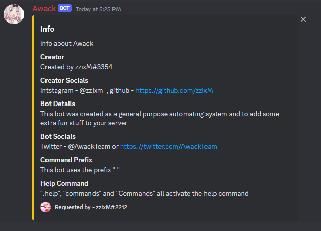

This is the longest Project I have worked on and likely the most code heavy system I hame created. When I started the project Awack I did not have such a large vision for the bot originally it was just going to reply with funny things and maybe sheare invites to servers I was in. This was untill I realised how large the Python Library "Discord.py" actually was and what you can automate with it.
Curently the Awack Bot has over 30 commands and will only grow as I work on it more. When i first started to learn the "Discord.py" Library I found it hard as working with Asynchronous functions was completly new to me. Although the Learning curve was large I quickly got the handle of it and started to come up with lots of new ideas on what I could add to the bot. Curently the system Can not only interat with discord but also Post on its Twitter and pull Gifs from Giphy.com but also play games and other cool things.
This project isnt completed yet and isnt running unless I host it locally which I only do at the moment to add new features or fix bugs but hopfully in the future I will publish the bot to the public. Id like to make some more commands dealing with the Twitter API but for now I think the Bot has been a huge success and am very proud of the code aswell as the Bots functionality in servers. if youd like to add the bot to your surver thr link is here.